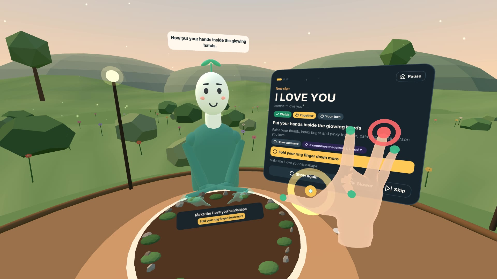
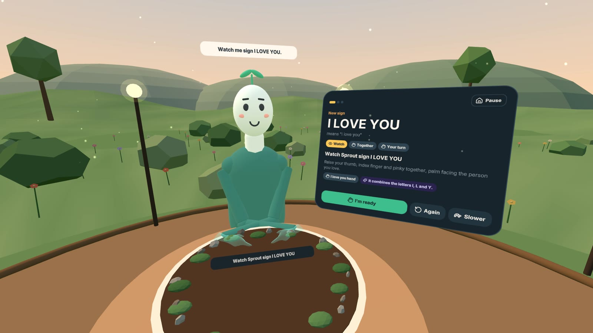
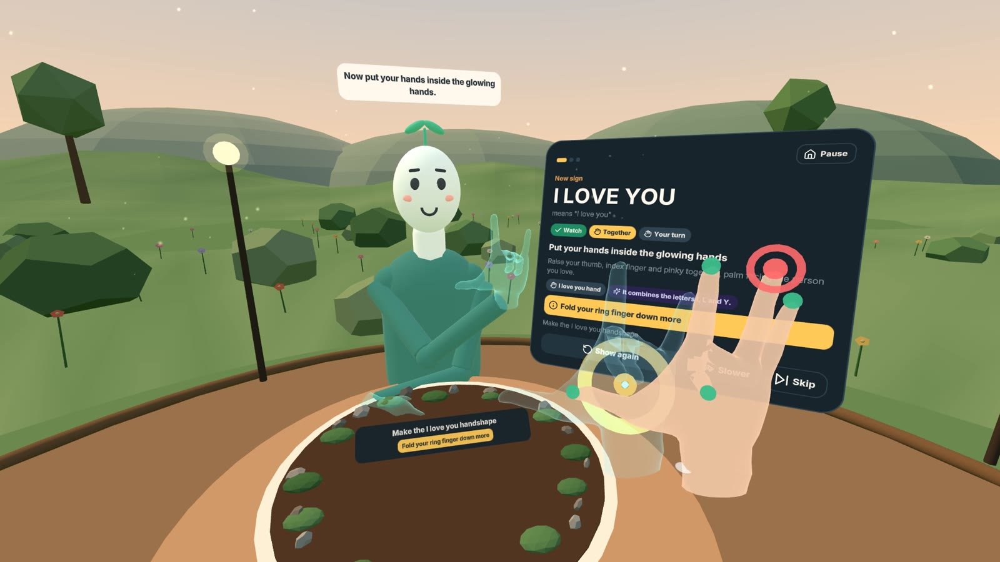
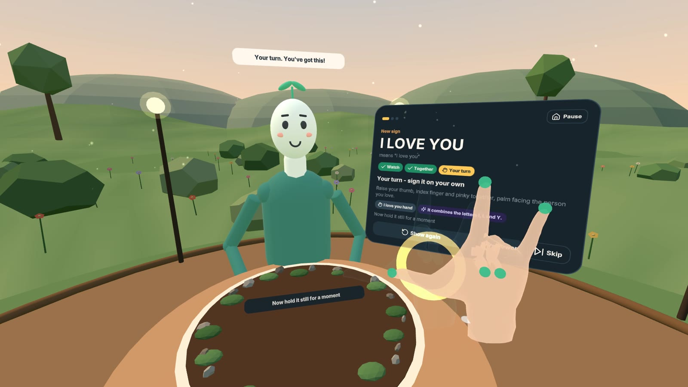
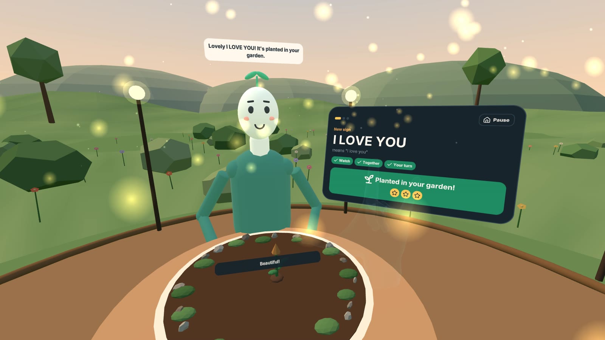
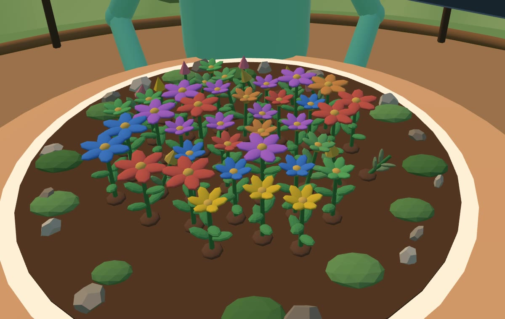

Tripothon S1 / Direction 03 / Visual asset board
A garden of first signs.
A world given to a family.
Signsprout XR offers a patient place to practise first ASL vocabulary. A seedling teacher, guide hands and a growing garden make small moments of learning visible.
Explore the project · Play the desktop demo · Source
Actual prototype frames captured with an emulated headset and simulated learner hands. These are not photographs or physical-headset test results.
The world — a warm, seated learning space with Sprout.
Watch — Sprout demonstrates the sign face to face.
Together — guide hands show the learner where to move.
Your turn — recall the sign with specific feedback.
Celebrate — each completed sign becomes a new plant.
Return — the garden reflects practice and spaced review.